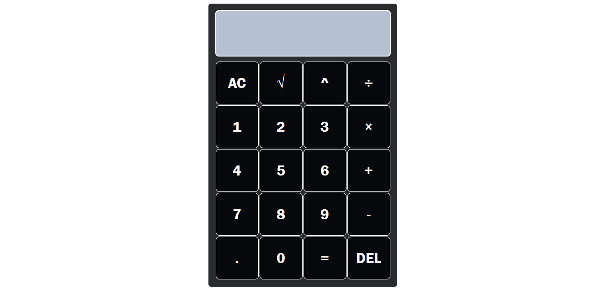

JavaScript Calculator
Simple calculator, fully developed in JavaScript using classes and conditionals. Contains the basic operators (addition, subtraction, multiplication, division, root and power) and decimal numbers.
A simple project that I started to measure my JavaScript skills, because creating a calculator sounded easy to me, but when thinking about how to develop it I realized that it required many important concepts of the language. I created the calculator and its functions using classes, then I added event listeners to the buttons to interact with the calculator. To carry out the operations, I used a switch, so that it is in charge of carrying out the operation and returning the result to the user. The most difficult part was working with the decimal numbers (Not being able to put more than one point, put a 0 automatically if there is no number, etc.) and the thousands separator. To work with the decimals and make the thousands separator, I decided to convert the number into a string and separate it with .split in the ".", in order to work separately with the integer part and the decimal part. The function for the thousands separator looks like this:
getNumber(number) {
const stringNumber = number.toString()
const integerDigits = parseFloat(stringNumber.split('.')[0])
const decimalDigits = stringNumber.split('.')[1]
let integerDisplay
if(isNaN(integerDigits)) {
integerDisplay = ''
} else {
integerDisplay = integerDigits.toLocaleString('en', { maximumFractionDigits: 0 })
}
if(decimalDigits != null) {
return `${integerDisplay}.${decimalDigits}`
} else {
return integerDisplay
}
}